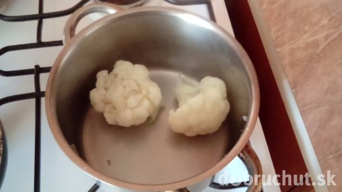
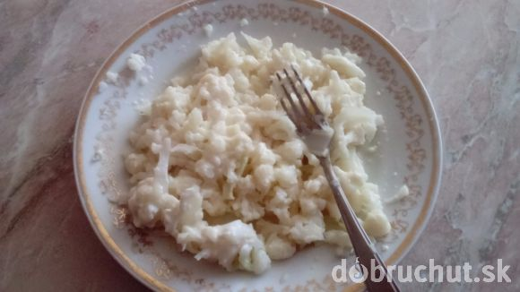
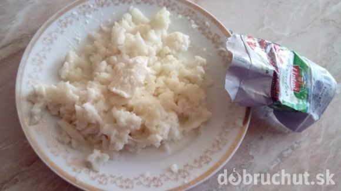
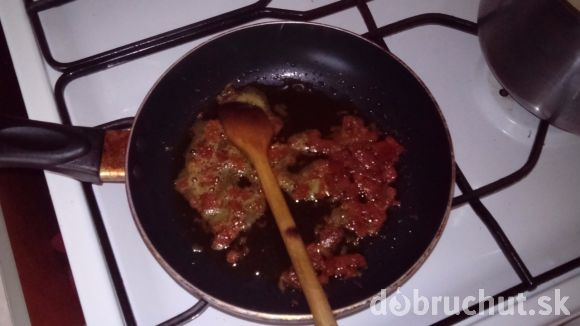
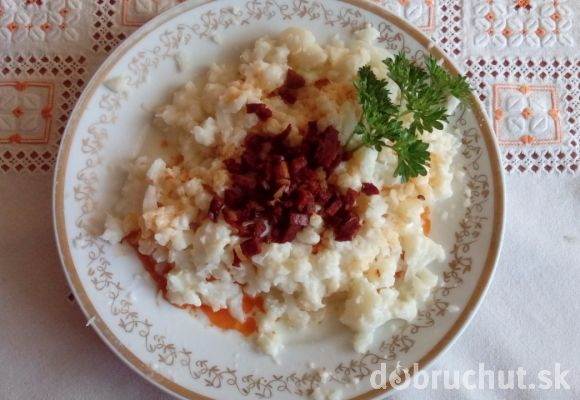

Recept na Karfiolové halušky s bryndzou
INGREDIENCIE
- 400 g karfiol
- 125 g bryndza
- 50 g slaninka
- podľa vlastného uvaženia g soľ
Postup
Karfiol dám variť do osolenej vody

Potom ho pokrájam na menšie kúsky.

Ešte na horúce dám bryndzu.

Vysmažím slaninku.

Polejem slaninkou. Netreba soliť.

- Karfiolové halušky s bryndzou
- na fotkách je odfotene menšie množstvo asi tak jedná porcia
všetok text a fotky su ukradnuté z tejto stránky :-) oficiálna stránka na recept